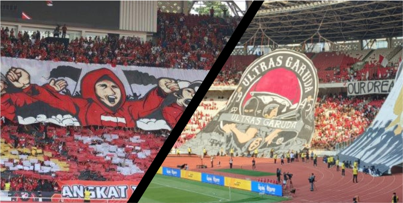

Kualifikasi Piala Dunia 2026 Round 2
Hari itu, kami memulai perjalanan dengan penuh semangat. Dari rumah,
saya dan kakak menaiki Grab menuju stasiun Cirebon. Meski sempat ada
keramaian, tak sedikit pun mengurangi semangat kami untuk menyaksikan
Timnas Indonesia bertanding melawan Irak di GBK. Dari Cirebon, kami naik
kereta menuju Gambir. Di stasiun, perut terasa lapar, jadi kami sempat
mampir makan di sekitar stasiun sebelum melanjutkan perjalanan ke
stadion menggunakan Grab.
Begitu kami sampai di GBK, suara-suara teriakan suporter Indonesia sudah
menggema di sekitar stadion. Saya bisa merasakan bagaimana ribuan orang
dari seluruh penjuru Indonesia bersatu demi mendukung tim Garuda. Di
tribun, koreografi dari Ultras Garuda dan La Grande mulai terbentuk,
memancarkan kebanggaan tersendiri.

Tak lama setelah itu, para pemain Indonesia masuk ke lapangan, dan
sorakan dari ribuan penonton semakin menggelegar. Formasi yang
diterapkan Shin Tae-yong adalah 3-4-3, dengan tiga bek utama yaitu Rizki
Ridho, Justin Hubner, dan Jordi Amat. Di lini tengah, ada Shayne
Pattynama, Nathan Tjoe-A-On, Thom Haye, dan Sandy Walsh, yang mendukung
trio penyerang: Marselino Ferdinan, Rafael Struick, dan Ragnar
Oratmangoen.
Setelah semua pemain berdiri di lapangan, lagu kebangsaan Indonesia Raya
pun dikumandangkan. Suara ribuan penonton yang menyanyikan lagu
kebangsaan serempak menjadi momen yang menggetarkan hati. Kami semua
bersatu, berharap agar Indonesia bisa mengalahkan Irak dalam
pertandingan kualifikasi ini.

Babak Pertama: Pertarungan Awal yang Sengit
Kick off dimulai, dan Indonesia langsung menunjukkan permainan agresif.
Rafael Struick dan Marselino Ferdinan beberapa kali mencoba menembus
pertahanan Irak, namun selalu dihalangi oleh pemain bertahan lawan. Thom
Haye tampil cukup menonjol di lini tengah, mengatur serangan dengan
umpan-umpan panjangnya.
Namun, Irak tak tinggal diam. Serangan balik cepat mereka kerap kali
membahayakan pertahanan Indonesia. Pemain kunci Irak, Bashar Rasan,
menjadi motor serangan bagi timnya. Ia sering memberikan umpan-umpan
matang kepada Aymen Hussein, penyerang tajam Irak.
Meski pertandingan berjalan ketat, Indonesia masih mampu menjaga
pertahanannya dengan baik hingga jeda babak pertama. Skor tetap 0-0, dan
kami di tribun mulai merasa optimis, meski tegang menanti babak kedua.
Babak Kedua: Drama dan Gol yang Mengguncang
Babak kedua dimulai dengan intensitas yang sama. Baru beberapa menit
berjalan, sebuah insiden terjadi di kotak penalti Indonesia. Jordi Amat
yang berusaha menghentikan serangan Irak melakukan pelanggaran handball
di dalam kotak terlarang, dan wasit langsung menunjuk titik putih.
Penalti ini dieksekusi dengan tenang oleh Aymen Hussein, membuka
keunggulan bagi Irak dengan skor 1-0.
Setelah gol tersebut, permainan Indonesia mulai terlihat goyah. Mereka
berusaha keras mengejar ketertinggalan, namun usaha Marselino dan
kawan-kawan sering kali gagal di hadapan pertahanan Irak yang solid.
Pelatih Shin Tae-yong pun mencoba beberapa pergantian pemain untuk
mengubah ritme permainan.
Namun, di menit ke-70, sebuah insiden krusial terjadi. Jordi Amat yang
berusaha menghentikan laju Aymen Hussein di depan kotak penalti
Indonesia melakukan sliding tackle yang terlambat. Wasit pun tanpa ragu
mengeluarkan kartu merah untuk Jordi karena dia adalah pemain terakhir
yang menghentikan peluang emas. Tidak hanya itu, wasit juga memberikan
penalti kepada Irak akibat pelanggaran tersebut.
Aymen Hussein maju sebagai eksekutor penalti, namun kali ini Ernando Ari
berhasil menyelamatkan gawangnya dengan menepis tendangan tersebut.
Suara sorakan penonton kembali menggema, memberikan sedikit harapan
untuk Indonesia meski bermain dengan 10 orang.
Meski penalti berhasil digagalkan, bermain dengan satu pemain kurang
membuat Indonesia kesulitan. Pada menit ke-87, petaka terjadi lagi bagi
Indonesia. Backpass yang dilakukan pemain Indonesia terlalu lemah,
sehingga Ali Jassim berhasil merebut bola dan melesakkan gol kedua untuk
Irak. Skor berubah menjadi 2-0.
Stadion mulai senyap. Harapan untuk menyamakan kedudukan perlahan-lahan
memudar. Meski demikian, semangat pemain Indonesia tidak meredup. Mereka
tetap mencoba melakukan serangan meski di bawah tekanan. Hingga peluit
panjang dibunyikan, skor tidak berubah, dan Irak keluar sebagai pemenang
dengan skor 2-0.
Setelah pertandingan usai dan hasil 2-0 untuk Irak diumumkan, kami
meninggalkan GBK dengan perasaan campur aduk. Kekecewaan memang terasa,
namun pengalaman berada di stadion sebesar GBK, bersama ribuan suporter,
tetap meninggalkan kesan tersendiri. Kami berjalan perlahan meninggalkan
stadion, menyesap suasana yang masih ramai dengan suporter Indonesia
yang meski kecewa, tetap menunjukkan semangat dan dukungan untuk tim
Garuda.
Kami kemudian naik MRT untuk menuju Mall Sarinah. Perut kami sudah mulai
keroncongan setelah seharian penuh di stadion. Begitu sampai di Sarinah,
suasananya masih ramai. Kami memutuskan untuk mencari tempat makan yang
nyaman, dan akhirnya memilih sebuah restoran di salah satu sudut mall.
Makanan tersaji dengan cepat, dan kami makan dengan lahap, mencoba
mengembalikan energi setelah hari yang cukup melelahkan.
Obrolan di meja makan masih berputar seputar pertandingan tadi. Kami
membahas momen-momen penting, seperti bagaimana Ernando Ari berhasil
menahan penalti, aksi Thom Haye di lini tengah, dan kartu merah Jordi
Amat yang menjadi titik balik dalam pertandingan. Meski hasilnya
mengecewakan, kami sepakat bahwa tim nasional sudah menunjukkan usaha
terbaik mereka.
Selesai makan, kami memutuskan untuk tidak terlalu lama berada di
Sarinah. Tubuh kami mulai terasa lelah, dan akhirnya kami kembali
memesan Grab untuk pulang ke hotel. Perjalanan menuju hotel terasa lebih
sunyi, mungkin karena kelelahan setelah hari yang panjang. Setiba di
hotel, kami langsung beristirahat, mempersiapkan diri untuk perjalanan
pulang keesokan harinya.
Pertandingan ini memberikan banyak pelajaran bagi Indonesia. Kadang,
dalam hidup, meski kita sudah berusaha sekuat tenaga, hasilnya belum
tentu memihak kepada kita. Namun, seperti tim nasional yang berjanji
akan belajar dari setiap kesalahan, kita juga harus memandang kegagalan
sebagai motivasi untuk terus berjuang.
Pengalaman hari itu, meski diwarnai kekalahan, tetap memberikan banyak
hal untuk direnungkan. Kekalahan tidak selalu buruk. Dari sana, kami
belajar tentang pentingnya semangat juang, kebersamaan, dan keinginan
untuk bangkit dari kegagalan. Hari ini mungkin kita kalah, tapi ada hari
esok untuk terus berjuang dan memperbaiki diri, baik di lapangan sepak
bola maupun dalam kehidupan.